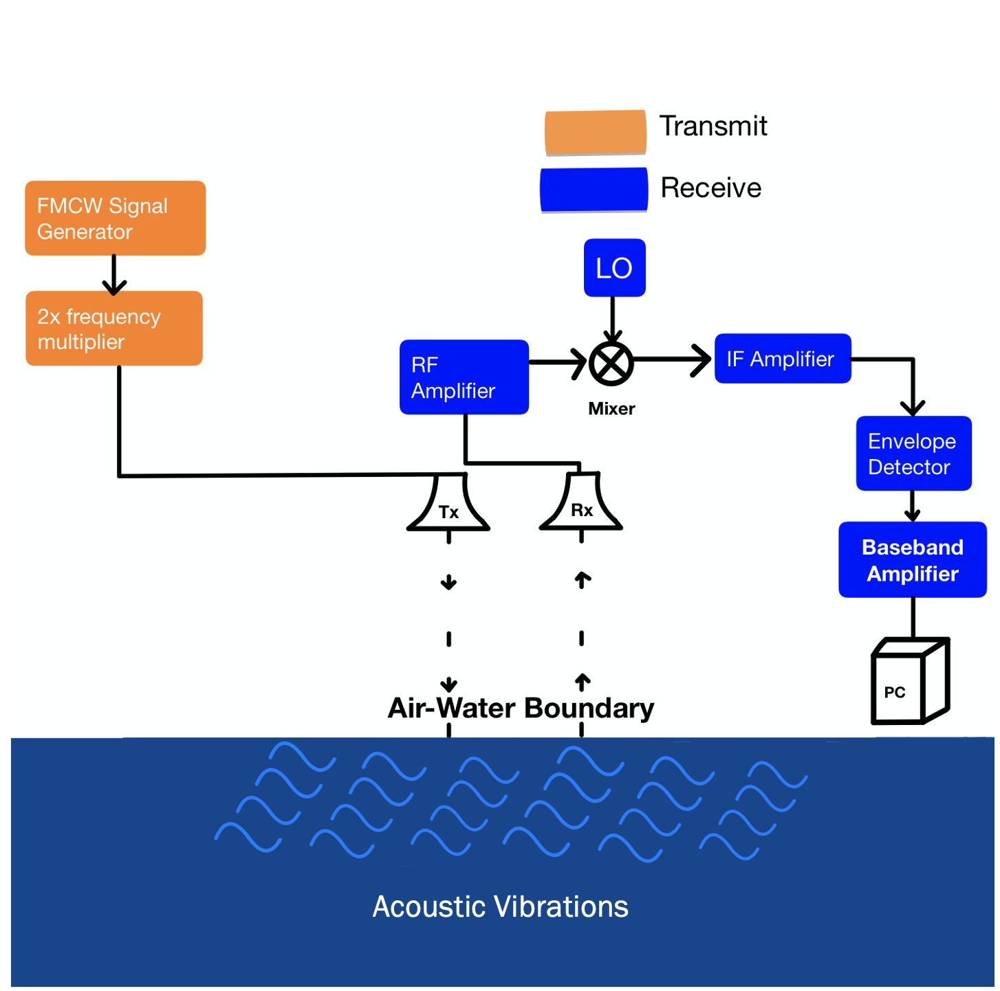
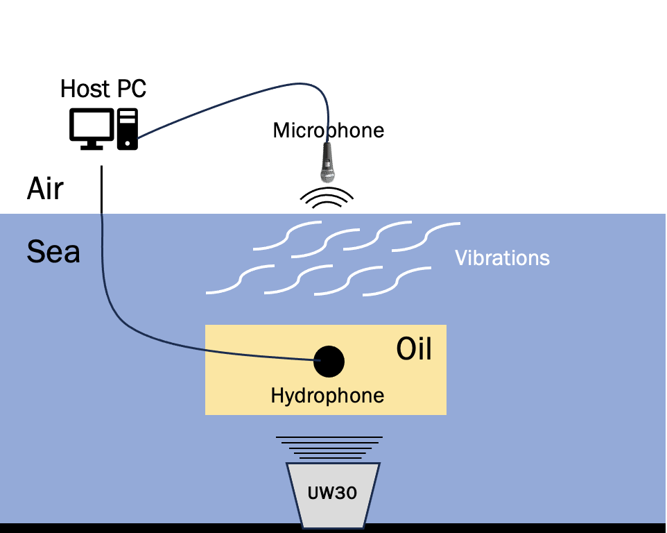

Research
A Wireless Communication Gateway to Cross the Sea-Ice-Air Boundary Using Magnetic Induction


My current research involves the design of a wireless magnetic induction link to cross the sea-air boundary layer. A magnetic
induction link offers reliable wireless cross-medium communication above and below the air-water boundary and in harsh environments.
The majority of Earth's surface is water, and communication across the boundary separating water from sky is essential to explore,
collect, and learn from the planet. The arctic serves as Earth's atmospheric regulator and contains the largest carbon data bank in
any region. To improve extraction of this data, I am developiong a full-scale model of a magnetic induction link for future deployement
in the arctic to transmit a signal wirelessly across the surface.
The link will acheive a range up to three-meters with a predicted bandwidth of 1kHz. The link will extract essential ocean variables
in the form of conductivity, temperature, and depth information, to create a sound-speed profile.
Translational Acoustic Radio Frequency Communication
During my graduate research at Dalhousie University, I had the opportunity to investigate a variety of wireless cross-medium commmunication
technology. One technology in particular known as TARF (translational acoustic radio frequency communication), became the subject of my
thesis topic. TARF is a hybrid cross-medium communication system that combines radio-frequency communication (the kind of communication we
use in cell-phones) with acoustics. Implemented by Dr. Fadebl Adib at the MIT Media Lab, TARF is a proposed solution to directly send
acoustic data to the surface using tiny vibrations created at the boundary. These vibrations can be detected using extremely high frequency
surface radar which reflect off the surface and re-create the original waveform sent by the submurged acoustic device. The impedance mismatch between the air-sea boundary layer limits our ability to incorporate wireless uplink communication between a
subsurface and airborne node. As a result, my thesis suggested the integration of a fluid half space, to explore methods of increasing the
amplitude of a surface capillary wave to improve both range and signal detection at the surface.
The communication link consists of the following components:
The capillary waves produced on the surface of the water by the submurged acoustic speaker are small - on the order of a few micro-meters.
TARF works by reflecting RF signals on the surface of the water and cross-correlating the transmitted signals with the reflected received signals.
Using the ambiguity function which tacks doppler shift as a function of delay, we are able to determine delay as a function of time, and re-sample the
originally tranmsitted acoustic signal using a surface radar. The wavelength of the RF transmitter at the surface must be proportional to the amplitude
of the acoustic surface vibrations in order to satisfy nyquist, and the targetted frequency is in the range of 60GHz. As a result and in order to
sufficiently sample the acoustic surface vibrations, the surface radar must operate at ultra-high frequency, demanding a costly and complex matched filter
at the surface. If we are able to increase the amplitude of these surface vibrations even by a few millimeters, we can reduce the wavelength and ultimately, the transmission frequency
of the surface radar. This reduces the complexity of our matched filter and increases the range of the TARF system.

